SL Paper 2
A particle P moves along a straight line. Its velocity \({v_{\text{P}}}{\text{ m}}\,{{\text{s}}^{ - 1}}\) after \(t\) seconds is given by \({v_{\text{P}}} = \sqrt t \sin \left( {\frac{\pi }{2}t} \right)\), for \(0 \leqslant t \leqslant 8\). The following diagram shows the graph of \({v_{\text{P}}}\).

Write down the first value of \(t\) at which P changes direction.
Find the total distance travelled by P, for \(0 \leqslant t \leqslant 8\).
A second particle Q also moves along a straight line. Its velocity, \({v_{\text{Q}}}{\text{ m}}\,{{\text{s}}^{ - 1}}\) after \(t\) seconds is given by \({v_{\text{Q}}} = \sqrt t \) for \(0 \leqslant t \leqslant 8\). After \(k\) seconds Q has travelled the same total distance as P.
Find \(k\).
Let \(f(x) = \frac{{20x}}{{{{\rm{e}}^{0.3x}}}}\) , for \(0 \le x \le 20\) .
Sketch the graph of f .
(i) Write down the x-coordinate of the maximum point on the graph of f .
(ii) Write down the interval where f is increasing.
Show that \(f'(x) = \frac{{20 - 6x}}{{{{\rm{e}}^{0.3x}}}}\) .
Find the interval where the rate of change of f is increasing.
Let \(f(x) = {{\rm{e}}^{2x}}\cos x\) , \( - 1 \le x \le 2\) .
Show that \(f'(x) = {{\rm{e}}^{2x}}(2\cos x - \sin x)\) .
Let the line L be the normal to the curve of f at \(x = 0\) .
Find the equation of L .
The graph of f and the line L intersect at the point (0, 1) and at a second point P.
(i) Find the x-coordinate of P.
(ii) Find the area of the region enclosed by the graph of f and the line L .
A particle P moves along a straight line so that its velocity, \(v\,{\text{m}}{{\text{s}}^{ - 1}}\), after \(t\) seconds, is given by \(v = \cos 3t - 2\sin t - 0.5\), for \(0 \leqslant t \leqslant 5\). The initial displacement of P from a fixed point O is 4 metres.
The following sketch shows the graph of \(v\).

Find the displacement of P from O after 5 seconds.
Find when P is first at rest.
Write down the number of times P changes direction.
Find the acceleration of P after 3 seconds.
Find the maximum speed of P.
Let \(f(x) = \sqrt[3]{{{x^4}}} - \frac{1}{2}\).
Find \(f'(x)\).
Find \(\int {f(x){\text{d}}x} \).
The following diagram shows the graphs of \(f(x) = \ln (3x - 2) + 1\) and \(g(x) = - 4\cos (0.5x) + 2\) , for \(1 \le x \le 10\) .

Let A be the area of the region enclosed by the curves of f and g.
(i) Find an expression for A.
(ii) Calculate the value of A.
(i) Find \(f'(x)\) .
(ii) Find \(g'(x)\) .
There are two values of x for which the gradient of f is equal to the gradient of g. Find both these values of x.
Consider the function \(f(x) = {x^2} - 4x + 1\) .
Sketch the graph of f , for \( - 1 \le x \le 5\) .
This function can also be written as \(f(x) = {(x - p)^2} - 3\) .
Write down the value of p .
The graph of g is obtained by reflecting the graph of f in the x-axis, followed by a translation of \(\left( {\begin{array}{*{20}{c}}
0\\
6
\end{array}} \right)\) .
Show that \(g(x) = - {x^2} + 4x + 5\) .
The graph of g is obtained by reflecting the graph of f in the x-axis, followed by a translation of \(\left( {\begin{array}{*{20}{c}}
0\\
6
\end{array}} \right)\) .
The graphs of f and g intersect at two points.
Write down the x-coordinates of these two points.
The graph of \(g\) is obtained by reflecting the graph of \(f\) in the x-axis, followed by a translation of \(\left( {\begin{array}{*{20}{c}}
0 \\
6
\end{array}} \right)\) .
Let R be the region enclosed by the graphs of f and g .
Find the area of R .
Let \(f(x) = \cos 2x\) and \(g(x) = \ln (3x - 5)\) .
Find \(f'(x)\) .
Find \(g'(x)\) .
Let \(h(x) = f(x) \times g(x)\) . Find \(h'(x)\) .
Let \(f(x) = x{(x - 5)^2}\) , for \(0 \le x \le 6\) . The following diagram shows the graph of f .
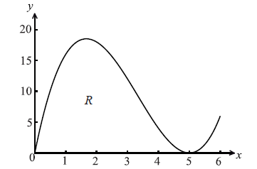
Let R be the region enclosed by the x-axis and the curve of f .
Find the area of R.
Find the volume of the solid formed when R is rotated through \({360^ \circ }\) about the x-axis.
The diagram below shows a part of the graph of a quadratic function \(g(x) = x(a - x)\) . The graph of g crosses the x-axis when \(x = a\) .

The area of the shaded region is equal to the area of R. Find the value of a.
The velocity v ms−1 of an object after t seconds is given by \(v(t) = 15\sqrt t - 3t\) , for \(0 \le t \le 25\) .
On the grid below, sketch the graph of v , clearly indicating the maximum point.
![]()
(i) Write down an expression for d .
(ii) Hence, write down the value of d .
A gradient function is given by \(\frac{{{\rm{d}}y}}{{{\rm{d}}x}} = 10{{\rm{e}}^{2x}} - 5\) . When \(x = 0\) , \(y = 8\) . Find the value of y when \(x = 1\) .
A particle moves in a straight line. Its velocity, \(v{\text{ m}}{{\text{s}}^{ - 1}}\), at time \(t\) seconds, is given by
\[v = {\left( {{t^2} - 4} \right)^3},{\text{ for }}0 \leqslant t \leqslant 3.\]
Find the velocity of the particle when \(t = 1\).
Find the value of \(t\) for which the particle is at rest.
Find the total distance the particle travels during the first three seconds.
Show that the acceleration of the particle is given by \(a = 6t{({t^2} - 4)^2}\).
Find all possible values of \(t\) for which the velocity and acceleration are both positive or both negative.
The following diagram shows the graph of \(f(x) = {{\rm{e}}^{ - {x^2}}}\) .
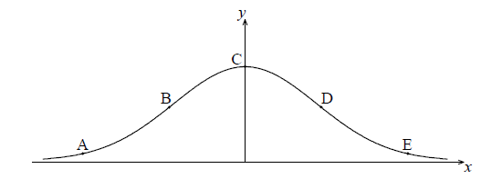
The points A, B, C, D and E lie on the graph of f . Two of these are points of inflexion.
Identify the two points of inflexion.
(i) Find \(f'(x)\) .
(ii) Show that \(f''(x) = (4{x^2} - 2){{\rm{e}}^{ - {x^2}}}\) .
Find the x-coordinate of each point of inflexion.
Use the second derivative to show that one of these points is a point of inflexion.
Let \(f(x) = - 0.5{x^4} + 3{x^2} + 2x\). The following diagram shows part of the graph of \(f\).
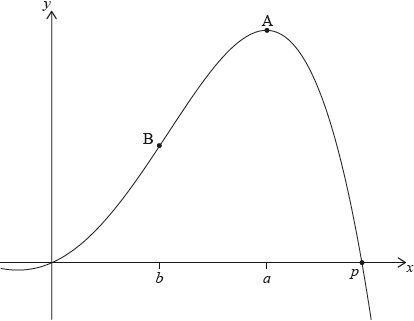
There are \(x\)-intercepts at \(x = 0\) and at \(x = p\). There is a maximum at A where \(x = a\), and a point of inflexion at B where \(x = b\).
Find the value of \(p\).
Write down the coordinates of A.
Write down the rate of change of \(f\) at A.
Find the coordinates of B.
Find the the rate of change of \(f\) at B.
Let \(R\) be the region enclosed by the graph of \(f\) , the \(x\)-axis, the line \(x = b\) and the line \(x = a\). The region \(R\) is rotated 360° about the \(x\)-axis. Find the volume of the solid formed.
Note: In this question, distance is in metres and time is in seconds.
A particle moves along a horizontal line starting at a fixed point A. The velocity \(v\) of the particle, at time \(t\), is given by \(v(t) = \frac{{2{t^2} - 4t}}{{{t^2} - 2t + 2}}\), for \(0 \leqslant t \leqslant 5\). The following diagram shows the graph of \(v\)

There are \(t\)-intercepts at \((0,{\text{ }}0)\) and \((2,{\text{ }}0)\).
Find the maximum distance of the particle from A during the time \(0 \leqslant t \leqslant 5\) and justify your answer.
Let \(f(x) = x\cos x\) , for \(0 \le x \le 6\) .
Find \(f'(x)\) .
On the grid below, sketch the graph of \(y = f'(x)\) .

The acceleration, \(a{\text{ m}}{{\text{s}}^{ - 2}}\), of a particle at time t seconds is given by \[a = \frac{1}{t} + 3\sin 2t {\text{, for }} t \ge 1.\]
The particle is at rest when \(t = 1\) .
Find the velocity of the particle when \(t = 5\) .
A particle P starts from a point A and moves along a horizontal straight line. Its velocity \(v{\text{ cm}}\,{{\text{s}}^{ - 1}}\) after \(t\) seconds is given by
\[v(t) = \left\{ {\begin{array}{*{20}{l}} { - 2t + 2,}&{{\text{for }}0 \leqslant t \leqslant 1} \\ {3\sqrt t + \frac{4}{{{t^2}}} - 7,}&{{\text{for }}1 \leqslant t \leqslant 12} \end{array}} \right.\]
The following diagram shows the graph of \(v\).
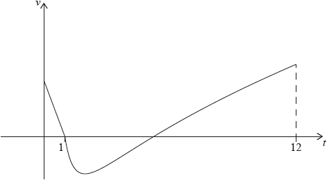
P is at rest when \(t = 1\) and \(t = p\).
When \(t = q\), the acceleration of P is zero.
Find the initial velocity of \(P\).
Find the value of \(p\).
(i) Find the value of \(q\).
(ii) Hence, find the speed of P when \(t = q\).
(i) Find the total distance travelled by P between \(t = 1\) and \(t = p\).
(ii) Hence or otherwise, find the displacement of P from A when \(t = p\).
Let \(f(x) = {{\rm{e}}^x}(1 - {x^2})\) .
Part of the graph of \(y = f(x)\), for \( - 6 \le x \le 2\) , is shown below. The x-coordinates of the local minimum and maximum points are r and s respectively.
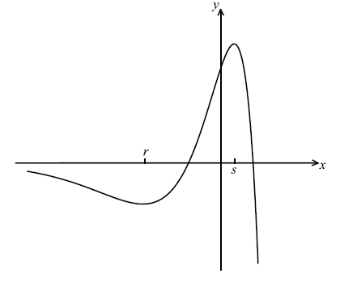
Show that \(f'(x) = {{\rm{e}}^x}(1 - 2x - {x^2})\) .
Write down the equation of the horizontal asymptote.
Write down the value of r and of s.
Let L be the normal to the curve of f at \({\text{P}}(0{\text{, }}1)\) . Show that L has equation \(x + y = 1\) .
Let R be the region enclosed by the curve \(y = f(x)\) and the line L.
(i) Find an expression for the area of R.
(ii) Calculate the area of R.
A particle’s displacement, in metres, is given by \(s(t) = 2t\cos t\) , for \(0 \le t \le 6\) , where t is the time in seconds.
On the grid below, sketch the graph of \(s\) .

Find the maximum velocity of the particle.
Let \(f(x) = a{x^3} + b{x^2} + c\) , where a , b and c are real numbers. The graph of f passes through the point (2, 9) .
Show that \(8a + 4b + c = 9\) .
The graph of f has a local minimum at \((1{\text{, }}4)\) .
Find two other equations in a , b and c , giving your answers in a similar form to part (a).
Find the value of a , of b and of c .
Let \(f'(x) = - 24{x^3} + 9{x^2} + 3x + 1\) .
There are two points of inflexion on the graph of f . Write down the x-coordinates of these points.
Let \(g(x) = f''(x)\) . Explain why the graph of g has no points of inflexion.
Let \(f(x) = {x^2}\) and \(g(x) = 3\ln (x + 1)\), for \(x > - 1\).
Solve \(f(x) = g(x)\).
Find the area of the region enclosed by the graphs of \(f\) and \(g\).
Consider the graph of the semicircle given by \(f(x) = \sqrt {6x - {x^2}} \), for \(0 \leqslant x \leqslant 6\). A rectangle \(\rm{PQRS}\) is drawn with upper vertices \(\rm{R}\) and \(\rm{S}\) on the graph of \(f\), and \(\rm{PQ}\) on the \(x\)-axis, as shown in the following diagram.
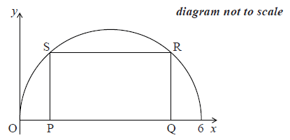
Let \({\text{OP}} = x\).
(i) Find \({\text{PQ}}\), giving your answer in terms of \(x\).
(ii) Hence, write down an expression for the area of the rectangle, giving your answer in terms of \(x\).
Find the rate of change of area when \(x = 2\).
The area is decreasing for \(a < x < b\). Find the value of \(a\) and of \(b\).
The diagram below shows a plan for a window in the shape of a trapezium.
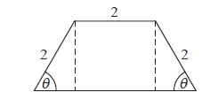
Three sides of the window are \(2{\text{ m}}\) long. The angle between the sloping sides of the window and the base is \(\theta \) , where \(0 < \theta < \frac{\pi }{2}\) .
Show that the area of the window is given by \(y = 4\sin \theta + 2\sin 2\theta \) .
Zoe wants a window to have an area of \(5{\text{ }}{{\text{m}}^2}\). Find the two possible values of \(\theta \) .
John wants two windows which have the same area A but different values of \(\theta \) .
Find all possible values for A .
Consider \(f(x) = x\ln (4 - {x^2})\) , for \( - 2 < x < 2\) . The graph of f is given below.

Let P and Q be points on the curve of f where the tangent to the graph of f is parallel to the x-axis.
(i) Find the x-coordinate of P and of Q.
(ii) Consider \(f(x) = k\) . Write down all values of k for which there are exactly two solutions.
Let \(g(x) = {x^3}\ln (4 - {x^2})\) , for \( - 2 < x < 2\) .
Show that \(g'(x) = \frac{{ - 2{x^4}}}{{4 - {x^2}}} + 3{x^2}\ln (4 - {x^2})\) .
Let \(g(x) = {x^3}\ln (4 - {x^2})\) , for \( - 2 < x < 2\) .
Sketch the graph of \(g'\) .
Let \(g(x) = {x^3}\ln (4 - {x^2})\) , for \( - 2 < x < 2\) .
Consider \(g'(x) = w\) . Write down all values of w for which there are exactly two solutions.
A particle starts from point \(A\) and moves along a straight line. Its velocity, \(v\;{\text{m}}{{\text{s}}^{ - 1}}\), after \(t\) seconds is given by \(v(t) = {{\text{e}}^{\frac{1}{2}\cos t}} - 1\), for \(0 \le t \le 4\). The particle is at rest when \(t = \frac{\pi }{2}\).
The following diagram shows the graph of \(v\).
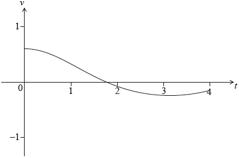
Find the distance travelled by the particle for \(0 \le t \le\ \frac{\pi }{2}\).
Explain why the particle passes through \(A\) again.
Let \(f(x) = \ln x\) and \(g(x) = 3 + \ln \left( {\frac{x}{2}} \right)\), for \(x > 0\).
The graph of \(g\) can be obtained from the graph of \(f\) by two transformations:
\[\begin{array}{*{20}{l}} {{\text{a horizontal stretch of scale factor }}q{\text{ followed by}}} \\ {{\text{a translation of }}\left( {\begin{array}{*{20}{c}} h \\ k \end{array}} \right).} \end{array}\]
Let \(h(x) = g(x) \times \cos (0.1x)\), for \(0 < x < 4\). The following diagram shows the graph of \(h\) and the line \(y = x\).

The graph of \(h\) intersects the graph of \({h^{ - 1}}\) at two points. These points have \(x\) coordinates 0.111 and 3.31 correct to three significant figures.
Write down the value of \(q\);
Write down the value of \(h\);
Write down the value of \(k\).
Find \(\int_{0.111}^{3.31} {\left( {h(x) - x} \right){\text{d}}x} \).
Hence, find the area of the region enclosed by the graphs of \(h\) and \({h^{ - 1}}\).
Let \(d\) be the vertical distance from a point on the graph of \(h\) to the line \(y = x\). There is a point \({\text{P}}(a,{\text{ }}b)\) on the graph of \(h\) where \(d\) is a maximum.
Find the coordinates of P, where \(0.111 < a < 3.31\).
Let \(f(x) = x\ln (4 - {x^2})\) , for \( - 2 < x < 2\) . The graph of f is shown below.

The graph of f crosses the x-axis at \(x = a\) , \(x = 0\) and \(x = b\) .
Find the value of a and of b .
The graph of f has a maximum value when \(x = c\) .
Find the value of c .
The region under the graph of f from \(x = 0\) to \(x = c\) is rotated \({360^ \circ }\) about the x-axis. Find the volume of the solid formed.
Let R be the region enclosed by the curve, the x-axis and the line \(x = c\) , between \(x = a\) and \(x = c\) .
Find the area of R .
A farmer wishes to create a rectangular enclosure, ABCD, of area 525 m2, as shown below.

The fencing used for side AB costs \(\$ 11\) per metre. The fencing for the other three sides costs \(\$ 3\) per metre. The farmer creates an enclosure so that the cost is a minimum. Find this minimum cost.
Let \(f(x) = {{\rm{e}}^{\frac{x}{4}}}\) and \(g(x) = mx\) , where \(m \ge 0\) , and \( - 5 \le x \le 5\) . Let \(R\) be the region enclosed by the \(y\)-axis, the graph of \(f\) , and the graph of \(g\) .
Let \(m = 1\).
(i) Sketch the graphs of \(f\) and \(g\) on the same axes.
(ii) Find the area of \(R\) .
Find the area of \(R\) .
Consider all values of \(m\) such that the graphs of \(f\) and \(g\) intersect. Find the value of \(m\) that gives the greatest value for the area of \(R\) .
Let \(f(x) = \frac{{3x}}{{x - q}}\), where \(x \ne q\).
Write down the equations of the vertical and horizontal asymptotes of the graph of \(f\).
The vertical and horizontal asymptotes to the graph of \(f\) intersect at the point \({\text{Q}}(1,3)\).
Find the value of \(q\).
The vertical and horizontal asymptotes to the graph of \(f\) intersect at the point \({\text{Q}}(1,3)\).
The point \({\text{P}}(x,{\text{ }}y)\) lies on the graph of \(f\). Show that \({\text{PQ}} = \sqrt {{{(x - 1)}^2} + {{\left( {\frac{3}{{x - 1}}} \right)}^2}} \).
The vertical and horizontal asymptotes to the graph of \(f\) intersect at the point \({\text{Q}}(1,3)\).
Hence find the coordinates of the points on the graph of \(f\) that are closest to \((1,3)\).
The velocity \(v{\text{ m}}{{\text{s}}^{ - 1}}\) of a particle after \(t\) seconds is given by
\(v(t) = {(0.3t + 0.1)^t} - 4\), for \(0 \le t \le 5\)
The following diagram shows the graph of \(v\).
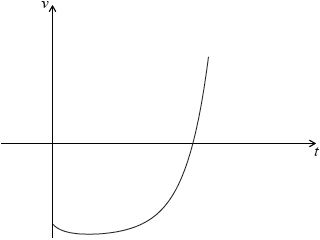
Find the value of \(t\) when the particle is at rest.
Find the value of \(t\) when the acceleration of the particle is \(0\).
Let \(f(x) = A{{\rm{e}}^{kx}} + 3\) . Part of the graph of f is shown below.
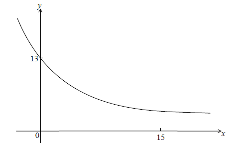
The y-intercept is at (0, 13) .
Show that \(A = 10\) .
Given that \(f(15) = 3.49\) (correct to 3 significant figures), find the value of k.
(i) Using your value of k , find \(f'(x)\) .
(ii) Hence, explain why f is a decreasing function.
(iii) Write down the equation of the horizontal asymptote of the graph f .
Let \(g(x) = - {x^2} + 12x - 24\) .
Find the area enclosed by the graphs of f and g .
Let \(f(t) = 2{t^2} + 7\) , where \(t > 0\) . The function v is obtained when the graph of f is transformed by
a stretch by a scale factor of \(\frac{1}{3}\) parallel to the y-axis,
followed by a translation by the vector \(\left( {\begin{array}{*{20}{c}}
2\\
{ - 4}
\end{array}} \right)\) .
Find \(v(t)\) , giving your answer in the form \(a{(t - b)^2} + c\) .
A particle moves along a straight line so that its velocity in ms−1 , at time t seconds, is given by v . Find the distance the particle travels between \(t = 5.0\) and \(t = 6.8\) .
Let \(f(x) = 2\ln (x - 3)\), for \(x > 3\). The following diagram shows part of the graph of \(f\).

Find the equation of the vertical asymptote to the graph of \(f\).
Find the \(x\)-intercept of the graph of \(f\).
The region enclosed by the graph of \(f\), the \(x\)-axis and the line \(x = 10\) is rotated \(360\)° about the \(x\)-axis. Find the volume of the solid formed.
Let \(f(x) = - {x^4} + 2{x^3} - 1\), for \(0 \le x \le 2\).
Sketch the graph of \(f\) on the following grid.
Solve \(f(x) = 0\).
The region enclosed by the graph of \(f\) and the \(x\)-axis is rotated \(360°\) about the \(x\)-axis.
Find the volume of the solid formed.
The diagram below shows part of the graph of the gradient function, \(y = f'(x)\) .

On the grid below, sketch a graph of \(y = f''(x)\) , clearly indicating the x-intercept.
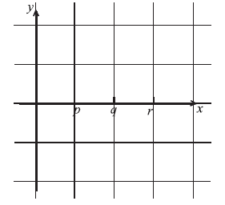
Complete the table, for the graph of \(y = f(x)\) .

Justify your answer to part (b) (ii).
A particle moves along a straight line such that its velocity, \(v{\text{ m}}{{\text{s}}^{ - 1}}\), is given by \(v(t) = 10t{{\text{e}}^{ - 1.7t}}\), for \(t \geqslant 0\).
On the grid below, sketch the graph of \(v\), for \(0 \leqslant t \leqslant 4\).

Find the distance travelled by the particle in the first three seconds.
Find the velocity of the particle when its acceleration is zero.
The population of deer in an enclosed game reserve is modelled by the function \(P(t) = 210\sin (0.5t - 2.6) + 990\), where \(t\) is in months, and \(t = 1\) corresponds to 1 January 2014.
Find the number of deer in the reserve on 1 May 2014.
Find the rate of change of the deer population on 1 May 2014.
Interpret the answer to part (i) with reference to the deer population size on 1 May 2014.
The graph of \(y = (x - 1)\sin x\) , for \(0 \le x \le \frac{{5\pi }}{2}\) , is shown below.

The graph has \(x\)-intercepts at \(0\), \(1\), \( \pi\) and \(k\) .
Find k .
The shaded region is rotated \(360^\circ \) about the x-axis. Let V be the volume of the solid formed.
Write down an expression for V .
The shaded region is rotated \(360^\circ \) about the x-axis. Let V be the volume of the solid formed.
Find V .
Let \(f(x) = {({x^2} + 3)^7}\). Find the term in \({x^5}\) in the expansion of the derivative, \(f’(x)\).
Let \(h(x) = \frac{{2x - 1}}{{x + 1}}\) , \(x \ne - 1\) .
Find \({h^{ - 1}}(x)\) .
(i) Sketch the graph of h for \( - 4 \le x \le 4\) and \( - 5 \le y \le 8\) , including any asymptotes.
(ii) Write down the equations of the asymptotes.
(iii) Write down the x-intercept of the graph of h .
Let R be the region in the first quadrant enclosed by the graph of h , the x-axis and the line \(x = 3\).
(i) Find the area of R.
(ii) Write down an expression for the volume obtained when R is revolved through \({360^ \circ }\) about the x-axis.
Let \(f(x) = \frac{1}{{x - 1}} + 2\), for \(x > 1\).
Let \(g(x) = a{e^{ - x}} + b\), for \(x \geqslant 1\). The graphs of \(f\) and \(g\) have the same horizontal asymptote.
Write down the equation of the horizontal asymptote of the graph of \(f\).
Find \(f'(x)\).
Write down the value of \(b\).
Given that \(g'(1) = - e\), find the value of \(a\).
There is a value of \(x\), for \(1 < x < 4\), for which the graphs of \(f\) and \(g\) have the same gradient. Find this gradient.
Let \(f(x) = 0.225{x^3} - 2.7x\), for \( - 3 \leqslant x \leqslant 3\). There is a local minimum point at A.
On the following grid,
Find the coordinates of A.
(i) sketch the graph of \(f\), clearly indicating the point A;
(ii) sketch the tangent to the graph of \(f\) at A.
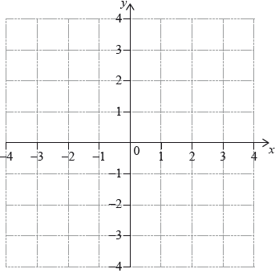
Let \(f(x) = 6 - \ln ({x^2} + 2)\), for \(x \in \mathbb{R}\). The graph of \(f\) passes through the point \((p,{\text{ }}4)\), where \(p > 0\).
Find the value of \(p\).
The following diagram shows part of the graph of \(f\).
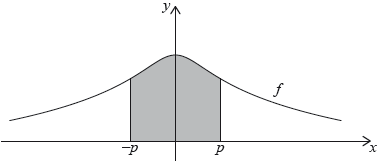
The region enclosed by the graph of \(f\), the \(x\)-axis and the lines \(x = - p\) and \(x = p\) is rotated 360° about the \(x\)-axis. Find the volume of the solid formed.
A particle moves in a straight line with velocity \(v = 12t - 2{t^3} - 1\) , for \(t \ge 0\) , where v is in centimetres per second and t is in seconds.
Find the acceleration of the particle after 2.7 seconds.
Find the displacement of the particle after 1.3 seconds.
Let \(f(x) = \frac{{\ln (4x)}}{x}\) for \(0 < x \le 5\).
Points \({\text{P}}(0.25,{\text{ }}0)\) and \(Q\) are on the curve of \(f\). The tangent to the curve of \(f\) at \(P\) is perpendicular to the tangent at \(Q\). Find the coordinates of \(Q\).
Let \(f\left( x \right) = 12\,\,{\text{cos}}\,x - 5\,\,{\text{sin}}\,x,\,\, - \pi \leqslant x \leqslant 2\pi \), be a periodic function with \(f\left( x \right) = f\left( {x + 2\pi } \right)\)
The following diagram shows the graph of \(f\).
![]()
There is a maximum point at A. The minimum value of \(f\) is −13 .
A ball on a spring is attached to a fixed point O. The ball is then pulled down and released, so that it moves back and forth vertically.
![]()
The distance, d centimetres, of the centre of the ball from O at time t seconds, is given by
\(d\left( t \right) = f\left( t \right) + 17,\,\,0 \leqslant t \leqslant 5.\)
Find the coordinates of A.
For the graph of \(f\), write down the amplitude.
For the graph of \(f\), write down the period.
Hence, write \(f\left( x \right)\) in the form \(p\,\,{\text{cos}}\,\left( {x + r} \right)\).
Find the maximum speed of the ball.
Find the first time when the ball’s speed is changing at a rate of 2 cm s−2.
Let \(f\left( x \right) = \,\,{\text{sin}}\,\left( {{e^x}} \right)\) for 0 ≤ \(x\) ≤ 1.5. The following diagram shows the graph of \(f\).
![]()
Find the x-intercept of the graph of \(f\).
The region enclosed by the graph of \(f\), the y-axis and the x-axis is rotated 360° about the x-axis.
Find the volume of the solid formed.
Let \(f(x) = (x - 1)(x - 4)\).
Find the \(x\)-intercepts of the graph of \(f\).
The region enclosed by the graph of \(f\) and the \(x\)-axis is rotated \(360^\circ\) about the \(x\)-axis.
Find the volume of the solid formed.
Let \(f(x) = \cos ({{\rm{e}}^x})\) , for \( - 2 \le x \le 2\) .
Find \(f'(x)\) .
On the grid below, sketch the graph of \(f'(x)\) .

The following diagram shows a waterwheel with a bucket. The wheel rotates at a constant rate in an anticlockwise (counter-clockwise) direction.

The diameter of the wheel is 8 metres. The centre of the wheel, A, is 2 metres above the water level. After t seconds, the height of the bucket above the water level is given by \(h = a\sin bt + 2\) .
Show that \(a = 4\) .
The wheel turns at a rate of one rotation every 30 seconds.
Show that \(b = \frac{\pi }{{15}}\) .
In the first rotation, there are two values of t when the bucket is descending at a rate of \(0.5{\text{ m}}{{\text{s}}^{ - 1}}\) .
Find these values of t .
In the first rotation, there are two values of t when the bucket is descending at a rate of \(0.5{\text{ m}}{{\text{s}}^{ - 1}}\) .
Determine whether the bucket is underwater at the second value of t .
Let \(f(x) = \frac{{g(x)}}{{h(x)}}\), where \(g(2) = 18,{\text{ }}h(2) = 6,{\text{ }}g'(2) = 5\), and \(h'(2) = 2\). Find the equation of the normal to the graph of \(f\) at \(x = 2\).
Let \(f(x) = {{\rm{e}}^x}\sin 2x + 10\) , for \(0 \le x \le 4\) . Part of the graph of f is given below.

There is an x-intercept at the point A, a local maximum point at M, where \(x = p\) and a local minimum point at N, where \(x = q\) .
Write down the x-coordinate of A.
Find the value of
(i) p ;
(ii) q .
Find \(\int_p^q {f(x){\rm{d}}x} \) . Explain why this is not the area of the shaded region.
Let \(f(x) = 5\cos \frac{\pi }{4}x\) and \(g(x) = - 0.5{x^2} + 5x - 8\) for \(0 \le x \le 9\) .
On the same diagram, sketch the graphs of f and g .
Consider the graph of \(f\) . Write down
(i) the x-intercept that lies between \(x = 0\) and \(x = 3\) ;
(ii) the period;
(iii) the amplitude.
Consider the graph of g . Write down
(i) the two x-intercepts;
(ii) the equation of the axis of symmetry.
Let R be the region enclosed by the graphs of f and g . Find the area of R.
Let \(f(x) = x\cos (x - \sin x)\) , \(0 \le x \le 3\) .
Sketch the graph of f on the following set of axes.

The graph of f intersects the x-axis when \(x = a\) , \(a \ne 0\) . Write down the value of a.
The graph of f is revolved \(360^\circ \) about the x-axis from \(x = 0\) to \(x = a\) . Find the volume of the solid formed.
Let f(x) = ln x − 5x , for x > 0 .
Find f '(x).
Find f "(x).
Solve f '(x) = f "(x).
Let \(f(x) = {x^3} - 4x + 1\) .
Expand \({(x + h)^3}\) .
Use the formula \(f'(x) = \mathop {\lim }\limits_{h \to 0} \frac{{f(x + h) - f(x)}}{h}\) to show that the derivative of \(f(x)\) is \(3{x^2} - 4\) .
The tangent to the curve of f at the point \({\text{P}}(1{\text{, }} - 2)\) is parallel to the tangent at a point Q. Find the coordinates of Q.
The graph of f is decreasing for \(p < x < q\) . Find the value of p and of q.
Write down the range of values for the gradient of \(f\) .
Consider a function \(f\), for \(0 \le x \le 10\). The following diagram shows the graph of \(f'\), the derivative of \(f\).

The graph of \(f'\) passes through \((2,{\text{ }} - 2)\) and \((5,{\text{ }}1)\), and has \(x\)-intercepts at \(0\), \(4\) and \(6\).
The graph of \(f\) has a local maximum point when \(x = p\). State the value of \(p\), and justify your answer.
Write down \(f'(2)\).
Let \(g(x) = \ln \left( {f(x)} \right)\) and \(f(2) = 3\).
Find \(g'(2)\).
Verify that \(\ln 3 + \int_2^a {g'(x){\text{d}}x = g(a)} \), where \(0 \le a \le 10\).
The following diagram shows the graph of \(g'\), the derivative of \(g\).

The shaded region \(A\) is enclosed by the curve, the \(x\)-axis and the line \(x = 2\), and has area \({\text{0.66 unit}}{{\text{s}}^{\text{2}}}\).
The shaded region \(B\) is enclosed by the curve, the \(x\)-axis and the line \(x = 5\), and has area \({\text{0.21 unit}}{{\text{s}}^{\text{2}}}\).
Find \(g(5)\).
Note: In this question, distance is in metres and time is in seconds.
A particle P moves in a straight line for five seconds. Its acceleration at time \(t\) is given by \(a = 3{t^2} - 14t + 8\), for \(0 \leqslant t \leqslant 5\).
When \(t = 0\), the velocity of P is \(3{\text{ m}}\,{{\text{s}}^{ - 1}}\).
Write down the values of \(t\) when \(a = 0\).
Hence or otherwise, find all possible values of \(t\) for which the velocity of P is decreasing.
Find an expression for the velocity of P at time \(t\).
Find the total distance travelled by P when its velocity is increasing.
The following diagram shows the graph of \(f(x) = a\sin bx + c\), for \(0 \leqslant x \leqslant 12\).

The graph of \(f\) has a minimum point at \((3,{\text{ }}5)\) and a maximum point at \((9,{\text{ }}17)\).
The graph of \(g\) is obtained from the graph of \(f\) by a translation of \(\left( {\begin{array}{*{20}{c}} k \\ 0 \end{array}} \right)\). The maximum point on the graph of \(g\) has coordinates \((11.5,{\text{ }}17)\).
The graph of \(g\) changes from concave-up to concave-down when \(x = w\).
(i) Find the value of \(c\).
(ii) Show that \(b = \frac{\pi }{6}\).
(iii) Find the value of \(a\).
(i) Write down the value of \(k\).
(ii) Find \(g(x)\).
(i) Find \(w\).
(ii) Hence or otherwise, find the maximum positive rate of change of \(g\).
Let \(f(x) = x{{\text{e}}^{ - x}}\) and \(g(x) = - 3f(x) + 1\).
The graphs of \(f\) and \(g\) intersect at \(x = p\) and \(x = q\), where \(p < q\).
Find the value of \(p\) and of \(q\).
Hence, find the area of the region enclosed by the graphs of \(f\) and \(g\).
All lengths in this question are in metres.
Let \(f(x) = - 0.8{x^2} + 0.5\), for \( - 0.5 \leqslant x \leqslant 0.5\). Mark uses \(f(x)\) as a model to create a barrel. The region enclosed by the graph of \(f\), the \(x\)-axis, the line \(x = - 0.5\) and the line \(x = 0.5\) is rotated 360° about the \(x\)-axis. This is shown in the following diagram.

Use the model to find the volume of the barrel.
The empty barrel is being filled with water. The volume \(V{\text{ }}{{\text{m}}^3}\) of water in the barrel after \(t\) minutes is given by \(V = 0.8(1 - {{\text{e}}^{ - 0.1t}})\). How long will it take for the barrel to be half-full?
Consider the curve with equation \(f(x) = p{x^2} + qx\) , where p and q are constants. The point \({\text{A}}(1{\text{, }}3)\) lies on the curve. The tangent to the curve at A has gradient \(8\). Find the value of p and of q .
Consider the curve \(y = \ln (3x - 1)\) . Let P be the point on the curve where \(x = 2\) .
Write down the gradient of the curve at P.
The normal to the curve at P cuts the x-axis at R. Find the coordinates of R.
A particle moves in a straight line. Its velocity \(v{\text{ m}}\,{{\text{s}}^{ - 1}}\) after \(t\) seconds is given by
\[v = 6t - 6,{\text{ for }}0 \leqslant t \leqslant 2.\]
After \(p\) seconds, the particle is 2 m from its initial position. Find the possible values of \(p\).
Let \(f(x) = 4x - {{\rm{e}}^{x - 2}} - 3\) , for \(0 \le x \le 5\) .
Find the x-intercepts of the graph of f .
On the grid below, sketch the graph of f .

Write down the gradient of the graph of f at \(x = 3\) .
Ramiro and Lautaro are travelling from Buenos Aires to El Moro.
Ramiro travels in a vehicle whose velocity in \({\text{m}}{{\text{s}}^{ - 1}}\) is given by \({V_R} = 40 - {t^2}\), where \(t\) is in seconds.
Lautaro travels in a vehicle whose displacement from Buenos Aires in metres is given by \({S_L} = 2{t^2} + 60\).
When \(t = 0\), both vehicles are at the same point.
Find Ramiro’s displacement from Buenos Aires when \(t = 10\).
Let \(f(x) = 5 - {x^2}\). Part of the graph of \(f\)is shown in the following diagram.

The graph crosses the \(x\)-axis at the points \(\rm{A}\) and \(\rm{B}\).
Find the \(x\)-coordinate of \({\text{A}}\) and of \({\text{B}}\).
The region enclosed by the graph of \(f\) and the \(x\)-axis is revolved \(360^\circ \) about the \(x\)-axis.
Find the volume of the solid formed.
Let \(f(x) = 3\sin x + 4\cos x\) , for \( - 2\pi \le x \le 2\pi \) .
Sketch the graph of f .
Write down
(i) the amplitude;
(ii) the period;
(iii) the x-intercept that lies between \( - \frac{\pi }{2}\) and 0.
Hence write \(f(x)\) in the form \(p\sin (qx + r)\) .
Write down one value of x such that \(f'(x) = 0\) .
Write down the two values of k for which the equation \(f(x) = k\) has exactly two solutions.
Let \(g(x) = \ln (x + 1)\) , for \(0 \le x \le \pi \) . There is a value of x, between \(0\) and \(1\), for which the gradient of f is equal to the gradient of g. Find this value of x.
Let \(f(x) = \cos ({x^2})\) and \(g(x) = {{\rm{e}}^x}\) , for \( - 1.5 \le x \le 0.5\) .
Find the area of the region enclosed by the graphs of f and g .
A particle P moves along a straight line. The velocity v m s−1 of P after t seconds is given by v (t) = 7 cos t − 5t cos t, for 0 ≤ t ≤ 7.
The following diagram shows the graph of v.
![]()
Find the initial velocity of P.
Find the maximum speed of P.
Write down the number of times that the acceleration of P is 0 m s−2 .
Find the acceleration of P when it changes direction.
Find the total distance travelled by P.
The velocity of a particle in ms−1 is given by \(v = {{\rm{e}}^{\sin t}} - 1\) , for \(0 \le t \le 5\) .
On the grid below, sketch the graph of \(v\) .

Find the total distance travelled by the particle in the first five seconds.
Write down the positive \(t\)-intercept.
Let \(f(x) = \frac{{100}}{{(1 + 50{{\rm{e}}^{ - 0.2x}})}}\) . Part of the graph of \(f\) is shown below.
![]()
Write down \(f(0)\) .
Solve \(f(x) = 95\) .
Find the range of \(f\) .
Show that \(f'(x) = \frac{{1000{{\rm{e}}^{ - 0.2x}}}}{{{{(1 + 50{{\rm{e}}^{ - 0.2x}})}^2}}}\) .
Find the maximum rate of change of \(f\) .
Let g(x) = −(x − 1)2 + 5.
Let f(x) = x2. The following diagram shows part of the graph of f.
![]()
The graph of g intersects the graph of f at x = −1 and x = 2.
Write down the coordinates of the vertex of the graph of g.
On the grid above, sketch the graph of g for −2 ≤ x ≤ 4.
Find the area of the region enclosed by the graphs of f and g.